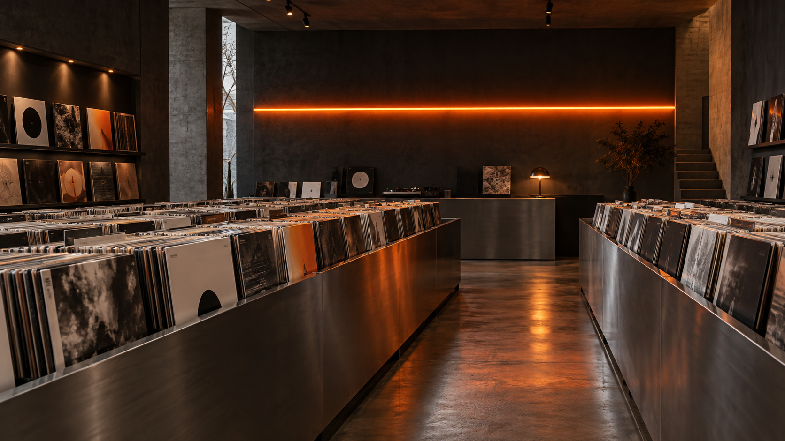

先完整聽完，再決定留下。
每張進入選片牆的唱片，都經過實際聆聽。我們記錄壓片、動態、編曲與一張唱片從頭到尾的完整感受。
WHY SIDE B
我們不追著排行榜跑。SIDE B 從獨立發行、重製經典與被忽略的曲目裡，挑出值得完整聽完的一張唱片。
每張進入選片牆的唱片，都經過實際聆聽。我們記錄壓片、動態、編曲與一張唱片從頭到尾的完整感受。
爵士、靈魂樂、電子與氛圍只是索引。我們更在意一張唱片是否能讓人停下來，重新聽見房間。
收藏不是把封面排滿牆面，而是在不同時刻，仍然願意把唱針放回同一道溝槽。

THE LISTENING ROOM
台北 · 台灣
週一至週五 / 11:00–19:00